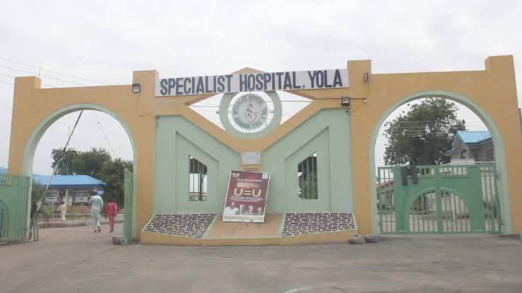

تقديم خدمات طبية وجراحية متقدمة
المستشفى المتخصص - يولا هو مرفق رعاية ثانوي رائد يخدم ولاية آدموايا. مع فريق من الأطباء والممرضين ذوي المهارات العالية، نقدم مجموعة واسعة من الخدمات الطبية والجراحية المتخصصة. مستشفانا مجهز بأدوات تشخيص حديثة ومرافق متقدمة للتعامل مع الحالات المعقدة وتقديم رعاية شاملة لمرضانا.
هدفنا هو تقديم رعاية طبية استثنائية مع التركيز على سلامة المريض وراحته. نقوم باستمرار بترقية معداتنا وتدريب موظفينا للبقاء في طليعة التطورات الطبية. بصفتنا مركز إحالة رئيسي، نلعب دورًا حاسمًا في نظام الرعاية الصحية بالولاية.